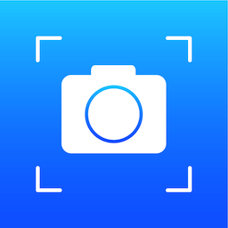
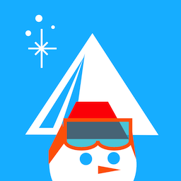
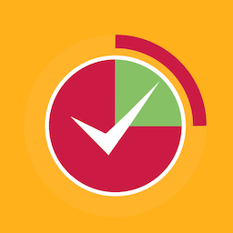
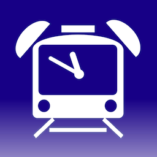
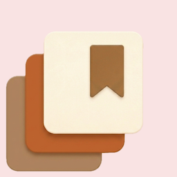

Privacy-First, On-Device iOS Applications.

複数のグリッドをスワイプジェスチャーで変更できる、構図を決めて撮影するのに便利なカメラアプリケーションです。 ノーマル/スクエア各5つのグリッドを選べます (スクエアグリッド使用時にはスクエア保存されます) 簡単に互換性のある他のアプリ(Instagram等)へGcameraで写真を送ることができます。 +++ 特徴 +++ - グリッド(ガイド)をスワイプ操作で選択。 - ノーマル/スクエア各5つのグリッド。 - スクエアグリッドでの保存。(但し、フルサイズの短辺の長さに合わせたサイズになります) - グリッドを写真に合成して保存。 - 加速度センサーに対応。(iPhoneが回転ロック状態でもでiPhoneの向きを感知できます) - 撮影方向ロック機能。 (ロックボタン押した時のiPhoneの向きを撮影方向として固定できます。但し、写真のプレビューでは無効となります) - 他アプリへの連携機能。 (jpgとInstagramフォーマットに対応。但し、選択一覧に表示された連携先のアプリが正式に対応していない場合、連携先アプリがクラッシュしたり、表示できない可能性があります) - メール送信機能。 - 写真にExif情報を添付できます。(ジオタグ含む) ・URLスキーム対応(gcamera:)
You can change multiple grids with the swipe gesture. Gcamera is a useful application in determining the composition when shooting. Five normal grids & square grids.(save photo square size when square gird mode) You can easily send photo with Gcamera to other compatible apps(e.g. Instagram). +++ Features +++ - grid (guide) selected by swiping operation. - Five normal grids & square grids. - Save with Grid. - Linkages to other applications.

滑走日記とギア管理を、シーズンをまたいで記録できるアプリです。 ・日付、ゲレンデ、天候、ギア、写真など、シーズンごとに詳細を記録。 ・過去のシーズンのギアや滑走記録をいつでも振り返れる。 ・オフシーズンに思い出のゲレンデやお気に入りのギアを振り返ろう。 あなたのスノーシーズンを、もっと鮮明に残そう。
Track every run. Own every season. SnowTracks records your gear, trips, slopes, and photos — all in one place. - Log dates, weather, snow conditions, and more. - Review your setup and favorite runs across seasons. - Built for freestylers, powder hounds, and backcountry riders. Your seasons are worth remembering. Make them count.

進捗どうですか？ このアプリは習慣等の数値目標達成のサポートをしてくれます。 設定した目標値に対して日々の活動を入力するだけで、実績、残量及びその達成率を一覧やカレンダー、グラフで確認できます。 楽しく頑張って進捗を進めましょう！
How is the progress? This application supports customary numerical target achievement, such as habit. Simply enter the day-to-day activities to the set target value, you can check the remaining amount and the achievement and it's rate in the list or calendar or graph. Let's proceed with the habits!

飲み会、食事会、宴会、女子会、残業などなど。時間を忘れ、つい帰宅時間を逃してしまったことはないですか? このアプリは、帰路に着く時間を逃さないようお知らせします。 楽しい一時もお仕事も大事ですが、家で待つ大切な人を心配させたり、終電を逃して大変な目に遭わないよう、是非このアプリをご活用ください！ 一言で言いますと「しつこい通知」によるアラームアプリです。 アラーム時刻はホーム画面やロック画面のウィジェットとして表示もできます。 ***** 機能 ***** アラーム指定時間の30分前、10分前、丁度、30秒後から10秒間、1分後に通知されます。(初期設定時) 通知はサウンド及びバイブによりお知らせします。 注）マナーモードの場合は通知音は出ません。 また端末の設定でバイブレーションをオフにしている場合もバイブレーションしません。 ※本アプリは日本国内向けのサービスです。/ Available only in Japan.

創作を綴る。あなただけの「作品集」 「できた！」という瞬間のときめきを、一生ものの記録に。 Handworks（ハンドワークス）は、ものづくりを愛するすべての人に贈るアプリです。 【主な機能】 •作品を愛でる「自分だけの展示場」 透明なガラスの棚に並べるような感覚で、自慢の作品を美しく、誇らしく残せます。眺めるだけで次の創作意欲が湧いてくる、あなただけの個展会場です。 •創作を支えた「素材の覚え書き」 作品の「裏側」にある、こだわりの作り方を記録。会社名、型番、大きさなど、作品の個性を形作った素材の情報を、作る手を止めることなく簡単に書き留められます。 •「次はこれで作ろう」をスムーズに お気に入りの素材を買ったお店や、ウェブサイトの情報を記録。過去の作品で使った素材を「もう一度手に入れたい」と思った時、迷わずお店に辿り着けます。同じ作品をもう一度作る時も、このアプリがあれば思いのままです。 •すべての作り手のために 飾りや編み物、木工、お人形、推し活グッズ作りなど、分野を問わず「ものづくり」を愛する人のための、優しく頼もしい相棒です。 あなたの手が紡ぎ出した宝物を、Handworksで大切に綴じてみませんか？
Handworks - Your Personal Creative Portfolio Capture the joy of "I made it!" and preserve your artistic journey in a stunning digital archive. Handworks is the perfect app for everyone who loves the art of handmade creation. 【Key Features】 •Immersive Works Gallery Display your creations with pride in a beautiful, translucent "Liquid Glass" interface. It's like having your own private exhibition where every piece inspires your next project. •Material Recipes for Your Creations Log the story behind each work. Easily note the makers, part numbers, and sizes of the materials that make your work unique—all without interrupting your creative flow. •Effortless Re-creation Store your favourite source shops and URLs. When you want to find that perfect component again for a repeat project, Handworks leads you straight back to the right shop. •Built for Every Maker From jewelry and knitting to woodworking, dolls, and cosplay creations, Handworks is the gentle, reliable companion for creators in every genre. Turn your passion into a beautiful, lifelong record. Your creations deserve a home as unique as your work.